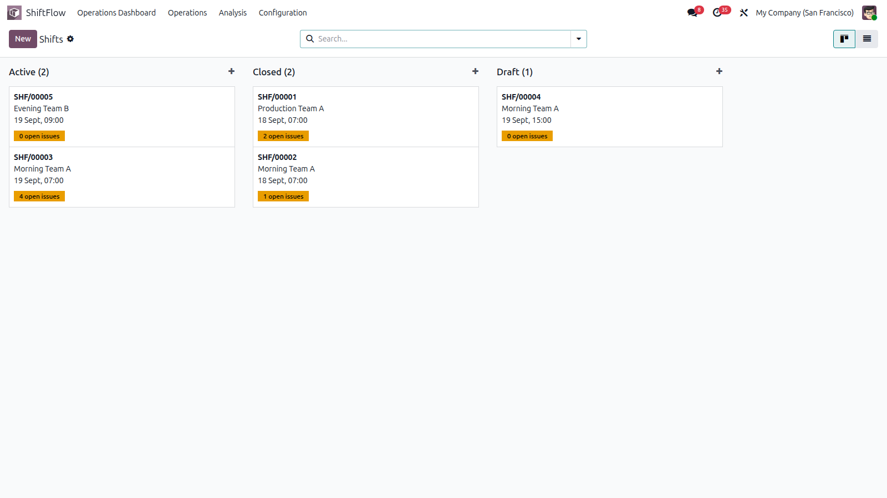
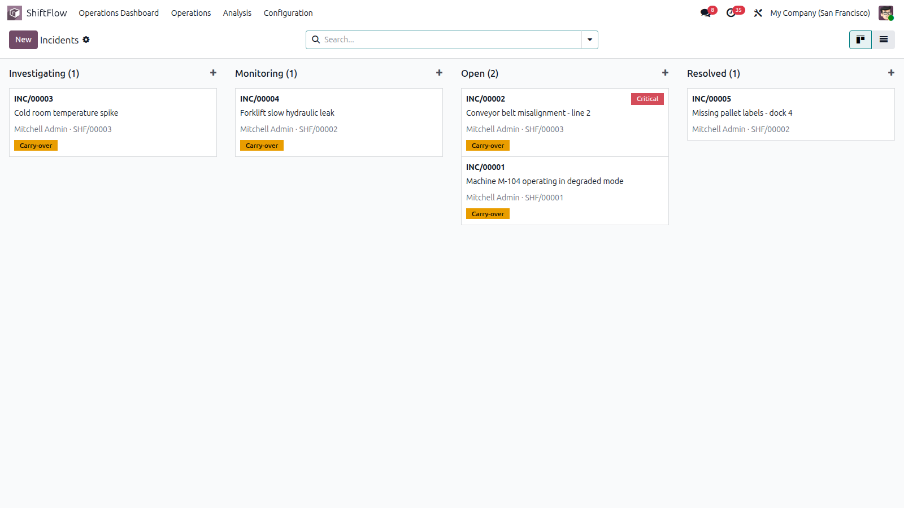
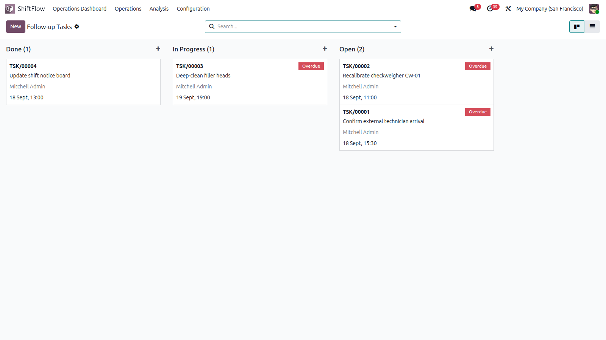
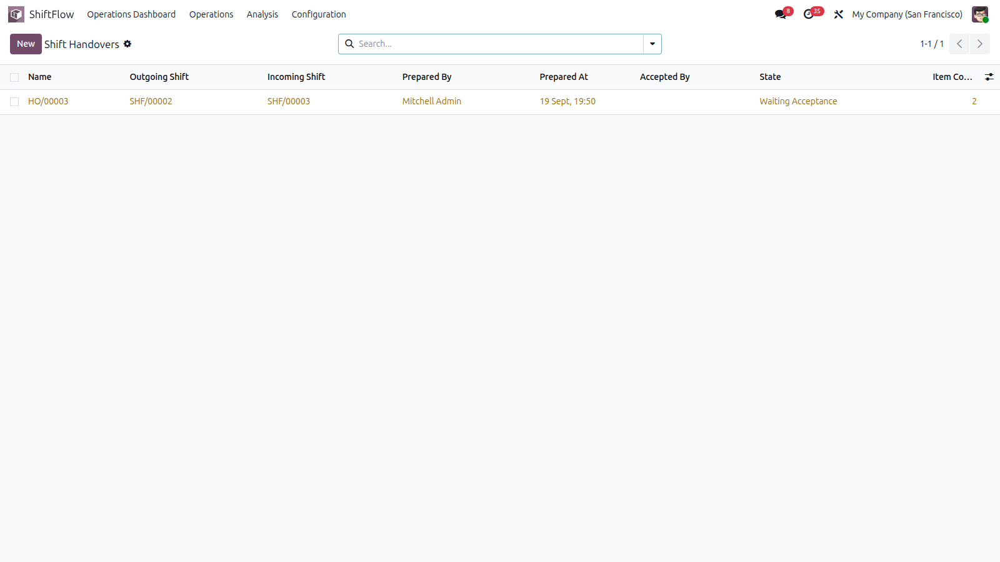
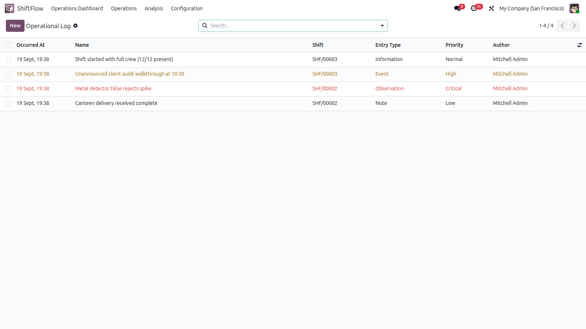

Operations Dashboard — KPIs, severity bars, 7-day activity and priority watch lists, with live data
One Module — Every Shift Operation
ShiftFlow turns shift handovers into a structured Odoo workflow. Record what happened, track what remains open, assign responsibility, and transfer unresolved work to the incoming team — without informal notes or spreadsheets.
🏭
Production
🔧
Maintenance
🚆
Transport & Logistics
🏢
Facilities
🎧
Service Operations
🏥
Healthcare & Sites
FEATURE 01
Shift Board by Status
Supervisors see every shift grouped by status — Draft, Active, Closing, Closed — with team, timing and open-issue counters on each card. Overlap detection prevents double-booking a team.
- ✓ Kanban grouped by status, list and form views
- ✓ Draft → Active → Closing → Closed workflow with guards
- ✓ Previous / next shift auto-linking per team
- ✓ Open issue counters and stat buttons (logs, incidents, tasks)
- ✓ Team and supervisor assignment with chatter history

Shifts kanban — Active, Closed and Draft columns with live open-issue counters
FEATURE 02
Operations Dashboard with Graphs & KPIs
A live operational overview without opening every record: 7 KPI cards, severity bars, task donut, 7-day activity and priority watch lists — all clickable through to the underlying records.
- ✓ Today's shifts, open & critical incidents, overdue tasks, waiting handovers, carry-over items
- ✓ Open incidents by severity (bar chart) and open tasks by status (donut)
- ✓ 7-day activity chart: shifts, incidents and tasks per day
- ✓ Priority watch tables: open incidents and overdue tasks with owners and deadlines
- ✓ One-click refresh and quick access to handovers
Operations Dashboard — 7 KPIs, severity bars, status donut, 7-day activity and watch lists
FEATURE 03
Incident Management with Severity
Give every operational incident an owner, a severity, a status and a resolution history. Critical incidents trigger email alerts and to-do activities automatically.
- ✓ Low, Medium, High and Critical severity with color coding
- ✓ Open → Investigating → Monitoring → Resolved workflow
- ✓ Carry-over flag to transfer incidents to the next shift
- ✓ Automatic email + activity alerts on critical incidents
- ✓ Kanban, list, graph and pivot analysis views

Incidents kanban — severity badges, carry-over flags and responsible owners
FEATURE 04
Follow-up Tasks That Never Get Lost
Unfinished work stays visible and owned across shift changes, with automatic overdue detection and reminders.
- ✓ Responsible user, deadline and Normal-to-Urgent priority
- ✓ Open → In Progress → Done workflow with overdue highlighting
- ✓ Automatic overdue email reminders and activities
- ✓ Carry-over duplication into the incoming shift on handover acceptance
- ✓ Kanban grouped by status with overdue badges

Follow-up tasks — Done, In Progress and Open columns with overdue highlighting
FEATURE 05
Digital Handover with Acceptance
The outgoing team prepares the handover — ShiftFlow auto-collects unresolved incidents, open tasks and high-priority logs — and the incoming team reviews and accepts it explicitly.
- ✓ Draft → Prepared → Waiting Acceptance → Accepted workflow (with rejection loop)
- ✓ Auto-collection of carry-over incidents, tasks and critical logs
- ✓ Acceptance restricted to incoming supervisor, team manager or ShiftFlow Manager
- ✓ Carry-over items duplicated into the incoming shift on acceptance
- ✓ Printable handover report (PDF) for signatures and archiving

Handover HO/00003 waiting for acceptance — 2 items auto-collected from the outgoing shift
Everything Included
🖥 Staff Interface
- Shifts kanban, list and form
- Operational log with priorities
- Incident board with severity badges
- Task board with overdue alerts
- Handover list with item counters
- Chatter and attachments everywhere
🔁 Handover Workflow
- Prepare → Send → Accept / Reject
- Auto-collect open incidents & tasks
- Acceptance rights control
- Carry-over duplication on accept
- Rejection reason required
- Printable PDF handover report
⚙ Backend & Automation
- Shift overlap detection
- Overdue & critical cron alerts
- Email templates included
- User / Manager roles + company rules
- Multi-company support
- Demo data included
More Screenshots

Operational log — timestamped events, observations and notes attached to each shift
🌐 Available in 3 Languages
The module interface is fully translated.
🇬🇧 English 🇫🇷 Français 🇪🇸 Español
Technical Specifications
Odoo Version
19.0 (Community & Enterprise)
Module Type
Standalone operational application
Dependencies
base, mail
External Services
None required
Frontend Tech
OWL components, CSS, QWeb reports
Backend Tech
Python 3 · Odoo ORM
License
LGPL-3
Demo Data
Included (teams, shifts, incidents, tasks)
Up and Running in 4 Steps
1. Install the moduleCopy to your addons folder and install from Settings → Apps.
2. Create your teamSet up teams, members and supervisors.
3. Schedule a shiftSet start/end time and assigned team, then start it.
4. Operate & hand overLog events, resolve incidents, then prepare, send and accept the handover.
Professional Support Included
By Farid SLIMANI · imazighenapps@gmail.com
📧 Fast responseDirect help from the author at imazighenapps@gmail.com.
🔄 Free UpdatesOngoing improvements and Odoo compatibility fixes.
📖 User ManualWorkflows documented: shifts, incidents, tasks, handovers.
🎭 Demo DataReady to test live right after installation.
Bring shift continuity into Odoo
ShiftFlow gives operational teams a structured way to document the present, control outstanding work, and transfer responsibility to the next shift.